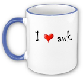

About
A few lines about me:
My name is Pavlin Mitev and I work as an Application Expert (Software Engineer) at Uppsala Multidisciplinary Center for Advanced Computational Science (UPPMAX), Uppsala University. I use commercial and open source software in my work, on a daily basis. Quite often I need to program, but a large number of the problems I need to solve include preparation of inputs (in some cases 1100 different inputs), collection of results from different programs, analysis or modification of the data before further use etc..
Most of the time my data is buried in text readable outputs containing many different parameters, which makes the direct access to the numbers a bit problematic. All programs, more or less, use different formats for their inputs and in some cases there are available suites that are very helpful for this transitions. Unfortunately, quite often they just can't do what you want or it is not yet implemented, or ...
 Here is how I found myself using awk. Initially, as a middle-ware between programs, then gradually using more of the features that come with the language. Then, I found it so addictive that most of my small tools are written in awk, despite the fact that sometimes there are better alternative solutions. I even use awk to write Python code, only because I find it cumbersome to use Python to collect my data (ex: Python vs. awk).
The purpose of the page is to illustrate some particularly strong sides of the language for text parsing, simple data collection, analysis, and much more. It is inspired by multiple simple solutions, often applied in mine and my colleagues' research work.
This site also serves as an auxiliary material to an awk course/seminar given by UPPMAX, Uppsala University.
Seminars are organized on a demand-base and currently follows the schedule for the "Introductory Linux course" at UPPMAX. Please, visit the UPPMAX course/seminar page for detailed information - venue, schedule, registration etc.